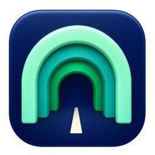

SSHTunnel
macOS 15+SSHTunnel создаёт на Mac локальный HTTP-прокси. Вы можете указать его в любом приложении с настройкой HTTP-прокси. Например, Firefox поддерживает такой прокси и может открывать через него сайты. Сайты увидят внешний IP-адрес сервера.
Apple Silicon · arm64 · ZIPПеред началом
Для готовой сборки нужен Mac с чипом Apple Silicon (M1 или новее) и macOS 15 или новее. Подготовьте адрес SSH-сервера, порт, логин и пароль или закрытый SSH-ключ. На сервере должна быть разрешена переадресация TCP. Для проверки подлинности сервера подойдёт его доверенный ключ или отпечаток. Можно подключиться и без проверки.
Первое подключение
Установите SSHTunnel
Скачайте и распакуйте ZIP. Перетащите SSHTunnel в папку «Программы» и откройте его. У сборки локальная подпись. Если macOS запросит подтверждение, откройте «Системные настройки» → «Конфиденциальность и безопасность» и подтвердите запуск скачанного приложения.
Укажите сервер и способ входа
На экране «Подключение» введите логин. Перейдите в «Настройки» и заполните поля «SSH-сервер» и «Порт SSH». Обычно используется порт
22.Для входа по паролю оставьте «Логин и пароль». Для входа по ключу выберите «SSH-ключ» и укажите файл закрытого ключа. Если вы используете ключ по умолчанию или ssh-agent, оставьте поле файла пустым.
Выберите, проверять ли ключ сервера
Проверка включена по умолчанию. Для нового сервера получите у администратора отпечаток SHA256 по доверенному каналу и вставьте его в поле «Отпечаток сервера». Если ваш Mac уже хранит проверенный ключ в
~/.ssh/known_hosts, оставьте поля отпечатка и файла доверенных ключей пустыми. Нажмите «Проверить ключ сервера». Если отпечаток не совпал, уточните у администратора, менялся ли ключ.Чтобы подключиться без проверки, в «Настройках» снимите флажок «Проверять ключ SSH-сервера». В этом режиме отпечаток и файл доверенных ключей не требуются. Если кто-то подменит сервер, приложение не обнаружит подмену, и при входе по паролю этот сервер сможет получить ваш пароль.
Подключитесь
Вернитесь на экран «Подключение». При входе по паролю введите пароль SSH. Чтобы использовать его при следующих подключениях, включите «Запомнить пароль в Связке ключей». Нажмите «Подключить» и дождитесь надписи «Туннель подключён».
Настройте приложение с поддержкой HTTP-прокси
В сетевых настройках приложения выберите HTTP-прокси. Укажите адрес
127.0.0.1и порт18080. Если вы меняли порт, возьмите его из строки «Локальный прокси» в SSHTunnel. Если нужен адрес одной строкой, скопируйте его кнопкой рядом с этой строкой.Пример для Firefox. В настройках браузера найдите слово «прокси» и откройте параметры соединения. Выберите ручную настройку, заполните поля HTTP-прокси и порта, включите использование этого же прокси для HTTPS и сохраните настройки.
Проверьте подключение
Если вы настроили прокси в браузере, откройте в нём страницу проверки IP. Сравните показанный адрес с внешним IP-адресом вашего SSH-сервера. Если адреса совпадают, запрос прошёл через туннель.
Как отключиться
Нажмите «Отключить» в SSHTunnel. Приложения с настроенным прокси продолжат обращаться к нему после отключения туннеля. Чтобы снова подключаться напрямую, верните прежние сетевые настройки в каждом таком приложении.
Если что-то не работает
Сервер отклонил вход. Проверьте логин и выбранный способ входа. При входе по ключу убедитесь, что на сервере разрешён соответствующий открытый ключ.
Туннель подключён, но сайты не открываются. Сверьте адрес и порт в браузере с данными в строке «Локальный прокси». Если они совпадают, уточните у администратора, разрешена ли переадресация TCP на сервере.
UDP показывает «шлюз недоступен». Для передачи UDP нужен клиент с поддержкой CONNECT-UDP через HTTP/1.1 и совместимый с BadVPN шлюз udpgw. Отключите туннель, проверьте в «Настройках» адрес шлюза со стороны SSH-сервера (по умолчанию 127.0.0.1:7300) и подключитесь снова. Обычные HTTP- и HTTPS-запросы работают независимо от этого шлюза.